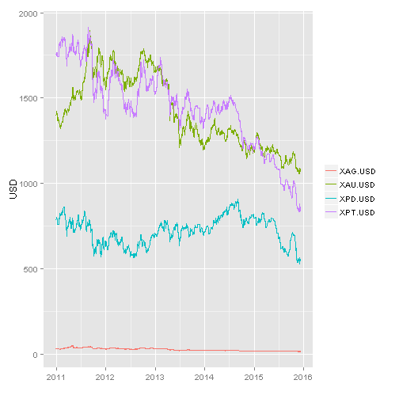

Enrique Pérez Herrero
Mining Engineer
hello

Shows a price plot for the selected metal and currency, and a control to change adjusted statistics: linear or loess
Shows the price table data for the selected metal and several currencies
Shows the ARIMA forecast for the next 365 days as a blue line, 80% confidence interval is displayed in orange, while 90% is in yellow.
Displays forecasted data table
Shows adjusted model using auto.arima from the forecast package
Plots first differences for the selected metal price or the differences of the data base 10 logarithm
Plots the ACF and the PACF
Autoplot: Graphical Methods with ggplot2 http://librestats.com/2012/06/11/autoplot-graphical-methods-with-ggplot2/
MORE BLACKBOX ANALYSIS - ARIMA MODELING IN R
http://businessforecastblog.com/more-blackbox-analysis-arima-modeling-in-r/
Step-by-Step Graphic Guide to Forecasting through ARIMA Modeling in R - Manufacturing Case Study Example (Part 4)
http://ucanalytics.com/blogs/step-by-step-graphic-guide-to-forecasting-through-arima-modeling-in-r-manufacturing-case-study-example/
Automatic Time Series Forecasting: The forecast Package for R
Journal of Statistical Software July 2008, Volume 27, Issue 3.
http://www.jstatsoft.org/article/view/v027i03
Forecasting: principles and practice
https://www.otexts.org/fpp